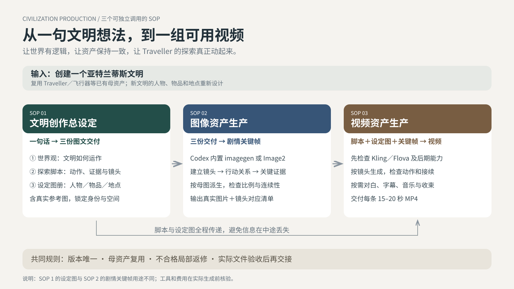

<!doctype html><html lang="zh-CN"><meta charset="utf-8"><meta name="viewport" content="width=device-width,initial-scale=1"><title>文明资产制作 · 三个SOP</title><style>body{margin:0;background:#f5f3ef;font-family:system-ui}main{max-width:1600px;margin:auto}img{width:100%;height:auto;display:block}nav{padding:18px 4%;display:flex;gap:24px}a{color:#234e49}@media print{nav{display:none}}</style><main><nav><a href="workflow.svg" download>下载矢量流程图</a><a href="../README.md">阅读开源包说明</a></nav></main></html>
